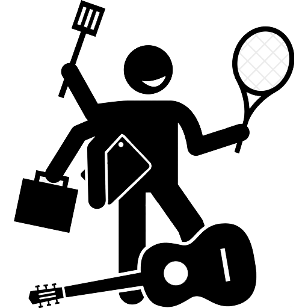

Hobbik
Megpróbáltam a kevésbé triviális dolgokat összegyűjteni mint például: a 9GAG, NETFLIX, vagy vidójáték függőségeimnél. Rengeteg hobbit kipróbáltam már, folyamatosan jönnek, mennek, cserélődnek.
Sportok amiket űztem
karate, tenisz, röplabda, torna, öttusa, tánc(néptánc,hiphop), kajak, evezés, atlétika, street workout
Zene
tekerőlant, elektromos és basszusgitár
Egyéb
fényképezés, barkácsolás
Ezek közül a gitározással, futással és barkácsolással még mostanában is szoktam foglalatoskodni.
Árpási Csongor © 2020